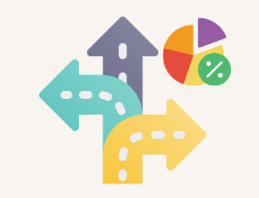
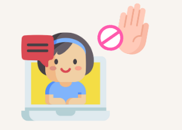
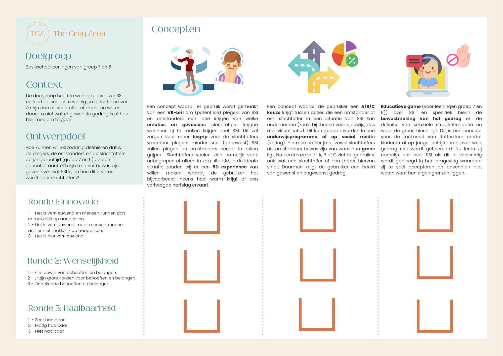

Rondom Seksuele Straat Intimidatie (SSI) is een grijs gebied waarin het lastig is om te bepalen wanneer iets SSI is. Dit grijze gebied zorgt ervoor dat onder anderen de wetgeving hierover in Rotterdam is komen te vervallen. Plegers weten vaak dus ook niet dat zij SSI hebben gepleegd. Slachtoffers en omstanders hebben niet door dat zij in contact zijn gekomen met SSI.
Uit ons onderzoek is gebleken dat onze doelgroep vooral op jongere leeftijd voor het eerst in contact is gekomen met SSI. Echter besteed het onderwijs hier (bijna) geen aandacht aan tijdens seksuele voorlichtingslessen in groep 7 en 8.
Uitvoering onderzoek
Wij zijn begonnen met het uitvoeren van Fieldresearch over de actuele stand van zaken rondom SSI. Hierin zijn wij ook naar de verschillende perspectieven gaan kijken (slachtoffers, omstanders en plegers). Hieruit bleek dat het wel eens gebeurt dat na een incident zowel het slachtoffer als de pleger pas beseft dat er spraken was van SSI. Om hier meer over te weten te komen zijn wij fieldresearch gaan uitvoeren in de vorm van een interview en een cardsorting. Hieruit konden wij concluderen dat het grijze gebied voor iedereen lastig in te schatten. Ook viel het op dat de doelgroep op vrij jonge leeftijd in contact komt met SSI (10-14 jaar). Dit gaf ons het idee om onze ontwerpvraag aan te scherpen ( zie vorig kopje).
Resultaten
Uit ons onderzoek is gebleken dat zowel mannen als vrouwen wel willen ingrijpen, maar niet weten hoe zij dit moeten doen zonder de situatie te laten escaleren. Zij zijn namelijk bang voor de reactie van de pleger op het moment dat deze aangesproken wordt op zijn/haar gedrag. Doordat zij niet weten hoe zij moeten reageren op SSI, worden situatie met SSI vaak genegeerd door zowel het slachtoffer als omstanders.
Momenten waarop SSI gepleegd worden, houden vaak lang aan. Omstanders proberen eerst de situatie in te schatten voordat zij ingrijpen. Slachtoffers hebben het gevoel dat zij er alleen voor staan zodra zij in contact komen met SSI. Zij hebben dit gevoel doordat omstanders vaak de situatie lijken te negeren.
Mannen en vrouwen krijgen op jonge leeftijd te maken met SSI. Vrouwen vaak als slachtoffer en mannen als omstander. Vrouwen krijgen aanzienlijk eerder te maken met SSI in vergelijking met mannen.
Ontwerprichtlijnen
Het product moet brugklasleerlingen informeren over wat (seksuele) straatintimidatie is
Mensen weten vaak niet wanneer zij SSI plegen en waar de grens ligt. Dit komt doordat er weinig en te laat, educatie wordt aangeboden aan jongeren.
Bronnen: Fischer, T., & Sprado, N. (2017). Seksuele straatintimidatie in Rotterdam.
Triade vitree. (2021, 4 februari). Straatintimidatie. Oké op School. Geraadpleegd op 17 mei 2022, van https://www.oke-op-school.nl/straatintimidatie/
Het product moet (seksuele) straatintimidatie definiëren voor de individuele leerling
SSI is te context afhankelijk waardoor de overheid SSI niet duidelijk kan definiëren. Dit maakt dat SSI niet strafbaar is.
Het product moet leerlingen handvatten bieden om (seksuele) straatintimidatie te voorkomen/ in te grijpen bij hierbij
Omstanders zeggen wel te willen ingrijpen, maar weten niet hoe. Als het erop aankomt (als ze daadwerkelijk omstander zijn van SSI), dan durven ze niet in te grijpen vanwege lage subjectieve veiligheid
Het product moet voorbeeldsituaties van (seksuele) straatintimidatie op een visuele en interactieve manier weergeven
Als iemand op een realistische manier in de schoenen geplaatst wordt van een ander in een specifieke situatie, dan krijgt diegene automatisch meer begrip voor de ander.
Weinschenk, S. (2020). 100 Things Every Designer Needs to Know about People (2de editie). Pearson Education, Limited.
Ravenscroft, I. (1998), What is it Like to be Someone Else? Simulation and Empathy. Ratio, 11: 170-185. https://doi.org/10.1111/1467-9329.00062
Het product moet representatief zijn voor de gehele samenleving (diversiteit)
De Gemeente Rotterdam wil mannen en jongens bewust te maken van de impact die ongewenste seksueel getinte opmerkingen kunnen hebben op het veiligheidsgevoel van vrouwen, meiden en LHBTIQ+ personen (maatschappij brede bewustwording).
Bron: Fischer, T., & Sprado, N. (2017). Seksuele straatintimidatie in Rotterdam.
Het product moet geschikt zijn voor een groep.
Een multiplayer game die uitvoerbaar is in 1 lesuur die educatief interactief is van alle leerlingen in de klas.
Bron: Interview met leerlingen, Rotterdam
Het product moet ervoor zorgen dat leerlingen en docenten reflecteren op hun keuzes en standpunten omtrent SSI.
In de klas wordt er wel door een docent aangemoedigd om te reflecteren, maar leerlingen zijn hier niet (voldoende) bewust van. Onze doelgroep is geneigd om zich vast te klampen aan de ideeën over zichzelf, hun handelen en hun omgeving. Om ervoor te zorgen dat leerlingen hun eigen grenzen aan kunnen geven, moeten ze meer bewust raken waarom ze op een bepaalde manier zouden handelen in een SSI gerelateerde situatie.
Het product moet brugklassers kennis geven over de onderwerpen weerbaarheid, intimidatie, consent, veiligheid, relatievorming, diversiteit.
Docenten een aantal onderwerpen missen in het lesmateriaal van seksuele voorlichting omdat deze niet of bijna niet aan bod komen, terwijl ze wel relevant zijn voor de leeftijdsgroep en hun ontwikkeling (online). Er wordt veel aandacht besteed aan hoe wel lichaam werkt en verandert, maar weinig aan seksuele grenzen, plezier en consent.
Een concept waarbij er gebruik wordt gemaakt van een VR-bril om (potentiële) plegers van SSI en omstanders een idee krijgen van welke emoties en gevoelens slachtoffers krijgen wanneer zij te maken krijgen met SSI. Dit zal zorgen voor meer begrip voor de slachtoffers waardoor plegers minder snel (onbewust) SSI zullen plegen en omstanders eerder in zullen grijpen. Slachtoffers voelen zich namelijk vaak onbegrepen of alleen in zo'n situatie. In de ideale situatie zouden wij er een 5D experience van willen maken waarbij de gebruiker het bijvoorbeeld ineens heel warm krijgt of een verhoogde hartslag ervaart.
Wat zou jij doen?

Een concept waarbij de gebruiker een A/B/C keuze krijgt tussen acties die een omstander of een slachtoffer in een situatie van SSI kan ondernemen (zoals bij theorie voor rijbewijs, dus met visualisatie). Dit kan gedaan worden in een onderwijsprogramma of op social media (voting). Hiermee creëer je bij zowel slachtoffers als omstanders bewustzijn van waar hun grens ligt. Na een keuze voor A, B of C ziet de gebruiker ook wat een slachtoffer of een dader hiervan vindt. Daarmee krijgt de gebruiker een beeld van gewenst en ongewenst gedrag.
Voor de toekomst

Educatieve game (voor basisschoolleerlingen groep 7-8) over SSI en specifiek hierin de bewustmaking van het gedrag en de definitie van seksuele straatintimidatie en waar de grens hierin ligt. Dit is een concept voor de toekomst van Rotterdam omdat kinderen al op jonge leeftijd leren over welk gedrag niet wordt getolereerd. Nu leren zij namelijk pas over SSI als dit al veelvuldig wordt gepleegd in hun omgeving waardoor zij te veel accepteren en bovendien niet weten waar hun eigen grenzen liggen.
prototype party

Voor de prototype party hebben we ervoor gekozen om de concepten te testen op haalbaarheid, innovatie en wenselijkheid. We konden concluderen dat concept 2 (A/B/C keuze) het meest in de smaak viel omdat deze als meest innoverend werd gezien. Wel kregen wij de feedback dat er eerst een vorm van educatie aan vooraf moest gaan voordat we onze doelgroep stellingen zouden voorleggen. Er moet namelijk wel eerst kennis zijn over SSI voordat er een oordeel gevormd kan worden door de doelgroep. We besloten concept twee te gebruiken als onderdeel van een educatieprogramma. Hiervoor moesten we wel iets bedenken dat het interactie tussen leerlingen veroorzaakt en een gesprek op gang brengt, want dat is een belangrijk doel voor onze uiteindelijke oplossing. Het concept van de VR bril hebben wij uitgesloten omdat we de feedback kregen dat een situatie met een VR bril als te heftig kan worden gezien door de doelgroep. Ook bevordert dit niet het groepsgesprek dat wij willen creëren doordat iedere leerling individueel een situatie ervaart en moet beoordelen.
Storyboard
De doelgroep zijn brugklassers. Omdat zij op deze jonge leeftijd al regelmatig te maken krijgen met (seksuele) straatintimidatie, biedt de school lessen aan om meer te leren over dit onderwerp. Het doel hierbij is dat de leerlingen hun eigen grenzen leren aangeven binnen intimidatie gerelateerd gedrag.
De docent legt uit wat (seksuele) straatintimidatie is en geeft voorbeelden. Ook bespreekt ze onderwerpen zoals veiligheid online en diversiteit (van relaties). Vervolgens zal ze de uitleg geven van het interactieve bordspel "Mijn wens mijn grens" dat de leerlingen in groepjes zullen gaan spelen met elkaar.
De leerlingen buigen zich over het fysieke speelbord. Er is een rond speelveld met lopers die gevuld moeten worden met verschillende kleuren steentjes. Op het bord zijn links naar 6 verschillende mini-games te zien en er liggen kaartjes met stellingen.
Wanneer een leerling met behulp van een dobbelsteen op een vakje met een QR-code komt, scant hij deze en opent een groeps minigame. Er wordt aan de leerling door middel van een meerkeuzevraag gepeild hoe hij of zij zou handelen in een bepaalde situatie gerelateerd aan (seksuele) straatintimidatie. Daarna zien de leerlingen de anonieme resultaten en dus ook de verschillen van mening.
De volgende leerling die aan de beurt is komt met zijn of haar loper op een vakje waarbij de QR code leidt naar een solo minigame. De leerlingen moeten op een interactieve foto (360) (seksuele) straatintimidatie spotten en dit aangeven zodat zij leren situaties te herkennen.
Om te leren omgaan met dit soort situaties en suggesties te geven voor handelingsmogelijkheden, zijn er spelkaarten met onder andere stellingen en weetjes. Als een leerling op een gekleurd vakje met een symbool komt, dan pakt de leerling een kaart in gelijke kleur. Hierop staat bijvoorbeeld een stelling en de leerling moet dan aangeven hoe hij of zij zou handelen in deze situatie. Onderaan de kaart staan suggesties voor hoe je zou kunnen ingrijpen.
Het spel is ten einde als de 6 minigames gespeeld zijn. Dit is het moment dat er discussie kan en mag ontstaan. Wat door de een wordt gezien als een normale situatie, kan voor de ander voelen als (seksuele) straatintimidatie De leerlingen gaan met elkaar in discussie en kunnen hierbij gebruik maken van discussiekaarten. Deze helpen hen een gesprek te voeren waarbij iedereen aan het woord komt en zijn of haar mening kan en durft te geven.
De docent krijgt een visueel overzicht van hoeveel situaties er beoordeeld zijn, of er gevaarlijke situaties zijn voorkomen en bij welke situaties de groepjes "weet ik niet" hebben ingevuld. Zo krijgt de docent inzicht in welke situaties de leerlingen lastig vinden om in te schatten en kan hiermee aan de slag.
De docent gaat met de klas in gesprek en bekijkt de moeilijke situaties. Om de leerlingen kennis te geven over hoe ze kunnen handelen en hoe ze hun eigen grenzen kunnen bepalen start de docent een discussie of speelt de situatie na met de leerlingen zodat ze zich beter in kunnen leven en dus een oordeel kunnen vormen.
Bij deze minigame willen we onze doelgroep leren hoe ssi zich kan uiten en en hoe ze dit kunnen herkennen, zo leren wij ze hoe ze moeten ingrijpen bij het zien van seksuele intimidatie. En hoe ze hun grenzen aan kunnen geven. In de minigame krijgen ze een situatie die ze moeten herkennen en vinden in het plaatje, zo leren ze deze situatie herkennen.
Bij deze minigame is het doel om een keuze te maken over wat je zou doen bij een bepaalde situatie. Deze situaties worden geschetst zodat het voor iedereen toepasbaar is. Nadat je alle keuzes gemaakt heb krijg je een scherm te zien met de resultaten van het groepje en wat het meest gekozen is. Hierna krijg je de tijd om te overleggen wat de verschillen zijn binnen het groepje. Hiermee leer je de grenzen kennen van jezelf en hoe dat kan verschillen met andere mensen. Ook krijg je op deze manier inzicht in hoe verschillend iedereen kan reageren op dezelfde situaties.